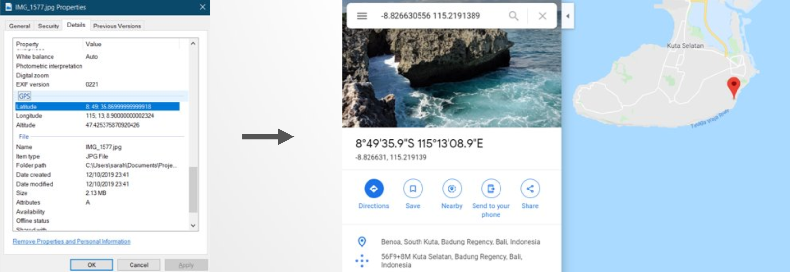

Trip Tracker - On track for improvement
This is a follow on article about how I improved this project. If you want to read how it was made then check this out Trip Tracker - the start of the voyage
As a recap, I know my camera captures GPS data on my photos and I know if I google this, google maps can show me where the photo was taken.

After a bit of a struggle, in September 2018 I end up with something that looks like this:
April 2019 and it is nearly 7 months since I have looked at my code or updated this website. This causes me many issues...
- I can't even remember what software I used to my write my code and I have several possible programs installed on this computer from experiementing over the years.
- I ended up writing the code where I stored the python packages (C:\Python27\Lib\site-packages\GPSPhoto) because it didn’t work otherwise and I wanted to get it working more than I cared about where it was stored. When I eventually run my code I can't find the new results.
- I am still having to manually tidy up the Excel output and I have to re-learn how to set up the Tableau file.
- I am just generally a bit disorentated and the documentation I left myself is not helping much.
Despite this, around midnight (on a work night!) I finally update this website. The actual visible changes are minor, so lets call it V1.1